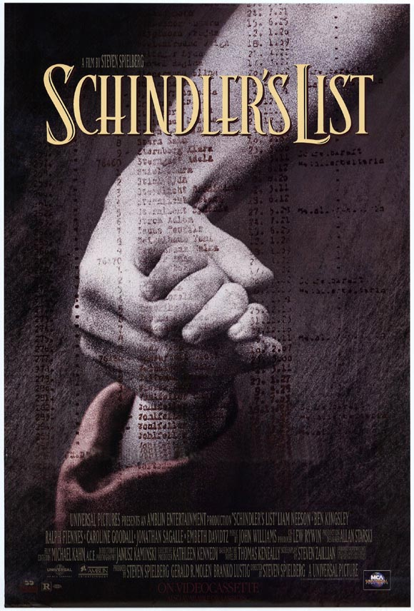

辛德勒的名单（Schindler's List，1993）
一句话短评：
内容简介：
- 1939年，波兰在纳粹德国的统治下，党卫军对犹太人进行了隔离统治。德国商人奥斯卡·辛德勒（连姆·尼森 Liam Neeson 饰）来到德军统治下的克拉科夫，开设了一间搪瓷厂，生产军需用品。凭着出众的社交能力和大量的金钱，辛德勒和德军建立了良好的关系，他的工厂雇用犹太人工作，大发战争财。
- 1943年，克拉科夫的犹太人遭到了惨绝人寰的大屠杀，辛德勒目睹这一切，受到了极大的震撼，他贿赂军官，让自己的工厂成为集中营的附属劳役营，在那些疯狂屠杀的日子里，他的工厂也成为了犹太人的避难所。
- 1944年，德国战败前夕，屠杀犹太人的行动越发疯狂，辛德勒向德军军官开出了1200人的名单，倾家荡产买下了这些犹太人的生命。在那些暗无天日的岁月里，拯救一个人，就是拯救全世界。
短评：
- 1.不仅仅是犹太人，而是整个人类的悲剧。 ——珍妮的肖像
- 2.“凡救人一命，即救全世界！”一段如此深刻的历史，多么希望它早早结束，但如此一部经典的影片你却永远都不想它完结。感动于良知，印象很深刻的永远是黑白画面中的那一抹红色。在任何时代，不管有多么的黑暗，都会有人性的光辉在闪烁着；经典的影片也不会因为缺失色彩而让人觉得沉闷。 ——Q。
可播放资源：
- 咪咕视频 VIP免费观看
- https://www.miguvideo.com/p/detail/615978408